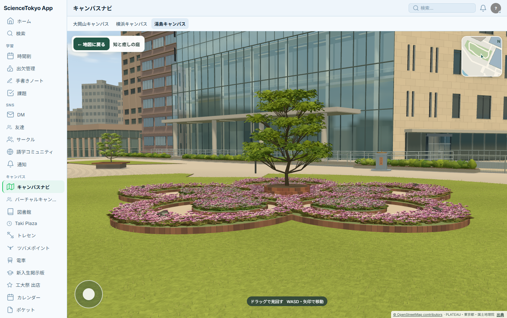
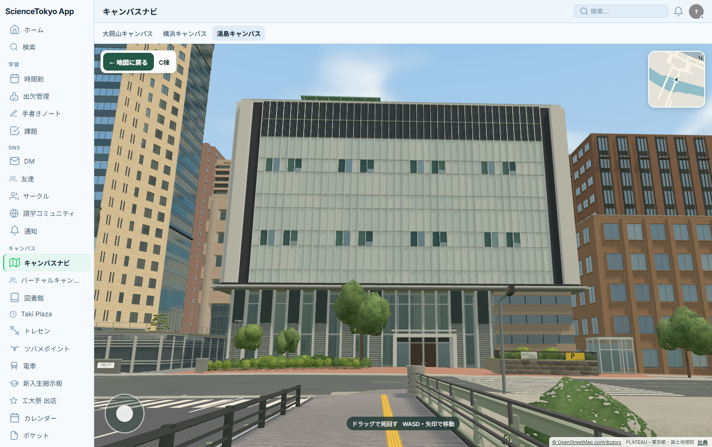
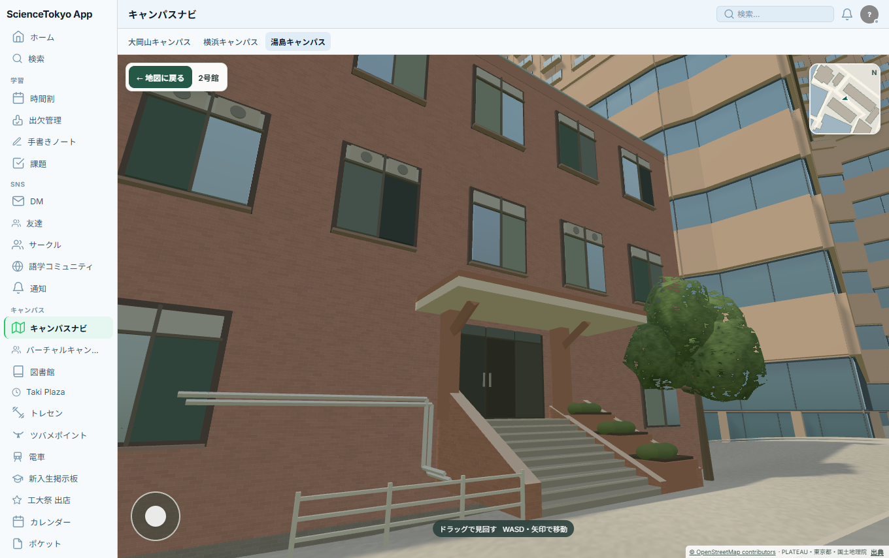

大学・設計者が掲載した外観写真と、同じ方向を向いて撮った学内マップの歩行画面です。各画像を開くと原寸で確認できます。
中央の木の足元には、外側の花壇、明るい砂利、内側の小さな植栽が五組並びます。奥には玄関の庇と、石の外壁に縦の小窓が見えます。

暗い格子の下に二段の窓列があります。橋から進むにつれ、庇の下の列柱、引き込んだガラス扉、玄関前の植栽と石積みが見えてきます。

C棟前の横断歩道、お茶の水門、外堀通りの舗装修正を同じ視点で比較する
建物に沿う配管の折れ曲がり、階段脇の花壇、庇とその下の斜めの支えを照合しました。
